パワクエ 西球記
神前試合まとめ
パワクエ「西球記（さいきゅうき）」の神前試合をまとめました。
対戦相手一覧
神前試合で選べる対戦相手ごとに、進化対象の特殊能力と固有スカウト選手候補をまとめました。
コラボ以外の別バージョンキャラはコーチ人数+2以上がほぼ確定で付くのでオススメです。
固有スカウト選手候補を既に全員チームに加入させた状態だと、チームとは無関係の契約書が出現します。
対戦相手は随時更新していきます。
乱馬チーム※11/26まで
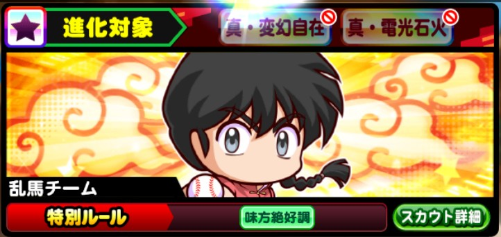
- 進化対象
- 真・変幻自在
真・電光石火 - 固有スカウト選手候補
- 早乙女 乱馬の契約書
天道 あかねの契約書
良牙チーム※11/26まで
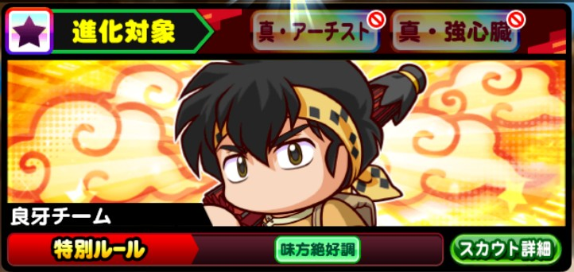
- 進化対象
- 真・アーチスト
真・強心臓 - 固有スカウト選手候補
- 響 良牙の契約書
シャンプーチーム※11/26まで
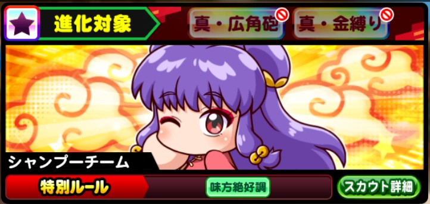
- 進化対象
- 真・広角砲
真・金縛り - 固有スカウト選手候補
- シャンプーの契約書
北雪野球流
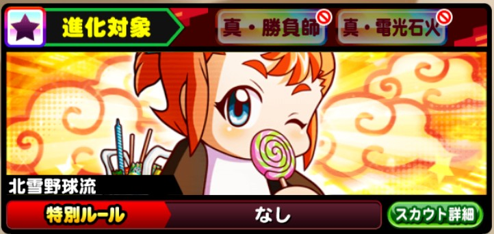
- 進化対象
- 真・勝負師
真・電光石火 - 固有スカウト選手候補
- 八尺 巫女子の契約書
矢部田 亜希子の契約書
小嵐 リョウの契約書
美園 千花の契約書
覇堂野球流
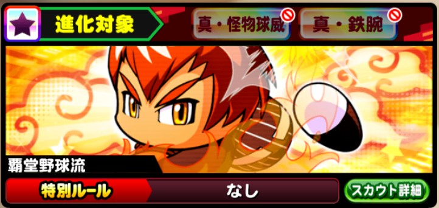
- 進化対象
- 真・怪物球威
真・鉄腕 - 固有スカウト選手候補
- 金原 いずるの契約書
木場 嵐士の契約書
土門 季音の契約書
水鳥 忍の契約書
くろがね野球流

- 進化対象
- 真・ストライク送球
真・左キラー - 固有スカウト選手候補
- 大鐘 餅太郎の契約書
宝塚 月斗の契約書
祝井 幸吉の契約書
銭形 乱蔵の契約書
パピヨンの契約書
あかつき野球流
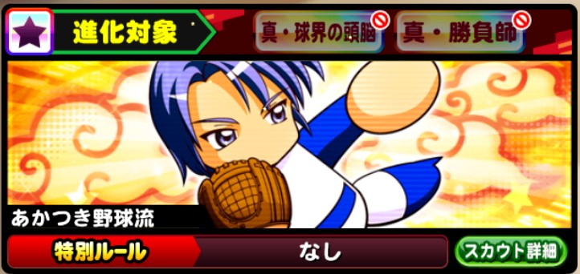
- 進化対象
- 真・球界の頭脳
真・勝負師 - 固有スカウト選手候補
- 八嶋 中の契約書
四条 賢二の契約書
二宮 瑞穂の契約書
七井＝アレフトの契約書
三本松 一の契約書
一ノ瀬 塔哉の契約書
九十九 宇宙の契約書
五十嵐 権三の契約書
六本木 優希の契約書
猪狩 守の契約書
［好敵手］猪狩 守の契約書
天空中央野球流

- 進化対象
- 真・怪童
真・電光石火 - 固有スカウト選手候補
- 東雲 翔也の契約書
神成 尊の契約書
虹谷 誠の契約書
［秘密兵器］虹谷 彩理の契約書
支良州水産野球流
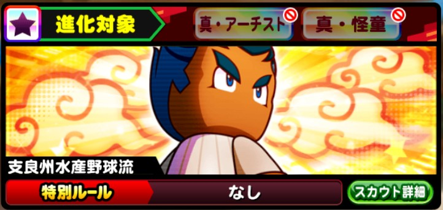
- 進化対象
- 真・アーチスト
真・怪童 - 固有スカウト選手候補
- 須々木 清吾の契約書
［カロリーバースト］赤原の契約書
真黒 綱寛の契約書
真開 伊瑠花の契約書
深見 和仁の契約書
メカニクス野球流
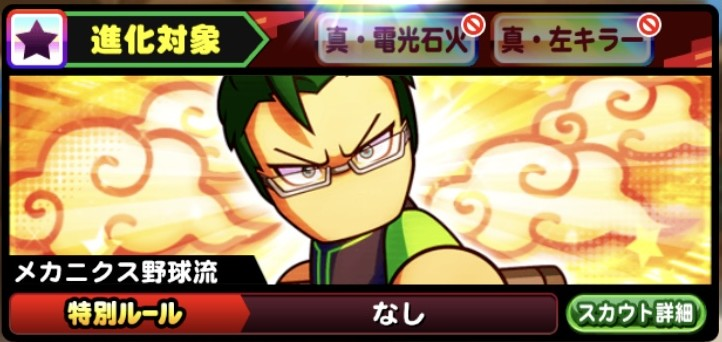
- 進化対象
- 真・電光石火
真・左キラー - 固有スカウト選手候補
- 魁 竜司の契約書
千賀 篤志の契約書
江暦 輝の契約書
鳴響野球流

- 進化対象
- 真・怪童
真・ローリング打法 - 固有スカウト選手候補
- 志藤 玲美の契約書
大越 清亮の契約書
伊能 麗示の契約書
円卓野球流
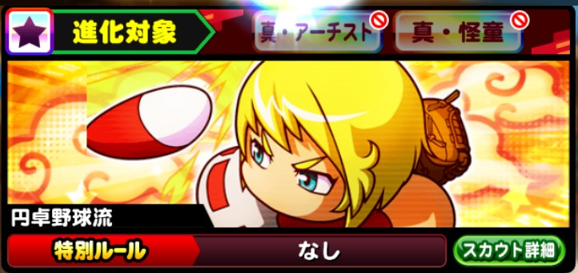
- 進化対象
- 真・アーチスト
真・怪童 - 固有スカウト選手候補
- 望戸 紅の契約書
阿麻 央真の契約書
岸田 卓の契約書
ランスロットの契約書
［キング］阿麻の契約書
マントル野球流
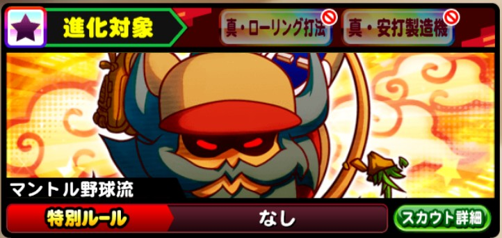
- 進化対象
- 真・ローリング打法
真・安打製造機 - 固有スカウト選手候補
- 黒衛 隆富の契約書
道満 里沙の契約書
堂江 竜河の契約書
伍歩 倫人の契約書
小掘 灯花の契約書
［匠の技］堂江の契約書
フリート野球流

- 進化対象
- 真・安打製造機
真・変幻自在 - 固有スカウト選手候補
- 清江 留萌の契約書
梶 杏嘉の契約書
梶 増人の契約書
沖野 海里の契約書
真開 彩葉の契約書
館橋 水奈都の契約書
［挑戦！］泡瀬の契約書
オクタヴィアの契約書
［ライダー］梶 増人の契約書
［たゆたう水月］清江 留萌の契約書
アンドロメダ野球流
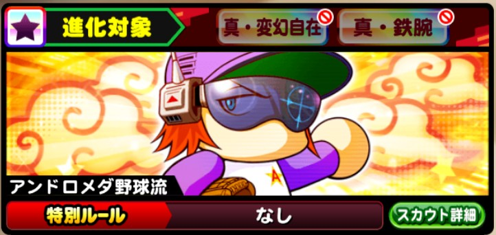
- 進化対象
- 真・変幻自在
真・鉄腕 - 固有スカウト選手候補
- ジャベリンの契約書
大西＝ハリソンの契約書
ガジェット落合の契約書
ＤＪＢ－Ｋの契約書
［ＣＵＴＩＥ］ＤＪＢ－Ｋの契約書
嵐丸 士朗の契約書
［アンドロメダ］大西の契約書
アスレテース野球流
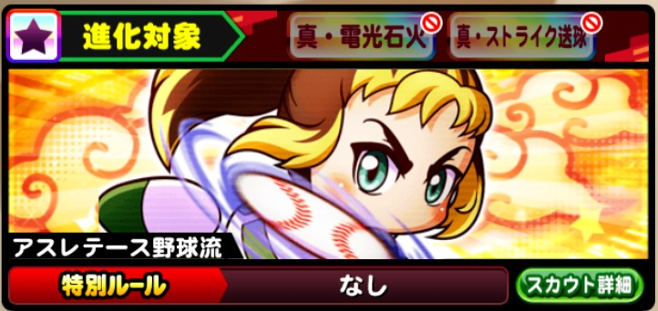
- 進化対象
- 真・電光石火
真・ストライク送球 - 固有スカウト選手候補
- カイル・モラレスの契約書
茂古葉 萌子の契約書
塚見 リフターの契約書
塚見 巴の契約書
ミンミンの契約書
［再起の灯］戸内 聖華の契約書
オーランド・ディクソンの契約書
花丸野球流
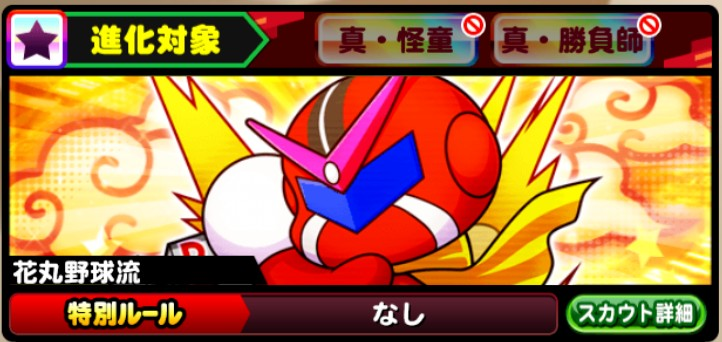
- 進化対象
- 真・怪童
真・勝負師 - 固有スカウト選手候補
- ピンクの契約書
ブラックの契約書
レッドの契約書
東 優の契約書
白瀬 芙喜子の契約書
雨崎 優輝の契約書
討総野球流

- 進化対象
- 真・アーチスト
真・勝負師 - 固有スカウト選手候補
- 佐渡 摩智の契約書
宮田 良哉の契約書
キリルの契約書
シュバリエの契約書
佐渡 至皇理の契約書
ケヒャールの契約書
エジプト野球流
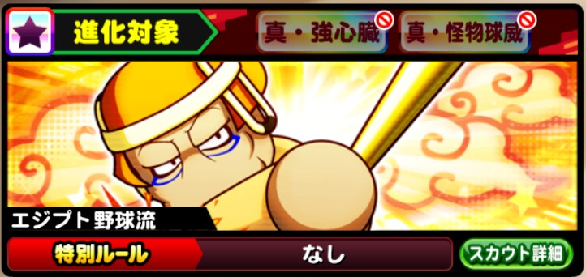
- 進化対象
- 真・強心臓
真・怪物球威 - 固有スカウト選手候補
- 日向 ららの契約書
建石 十斗の契約書
ヌウビスの契約書
セティーヌの契約書
ホールスアン４世の契約書
ニャプテトの契約書
天盟野球流

- 進化対象
- 真・怪童
真・怪物球威 - 固有スカウト選手候補
- 敷上 マニィの契約書
戸草 鏡の契約書
天宮 果也乃の契約書
高原 曲の契約書
［ピクニック］高原 曲の契約書
彩菊花野球流
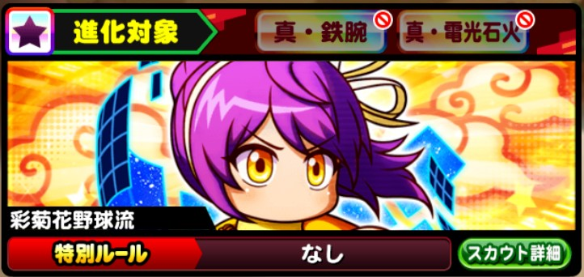
- 進化対象
- 真・鉄腕
真・電光石火 - 固有スカウト選手候補
- 時任 幽平の契約書
泉谷 未来の契約書
物茂 渡の契約書
［占い師］泉谷 未来の契約書
大筒野球流

- 進化対象
- 真・強心臓
真・安打製造機 - 固有スカウト選手候補
- ［大筒］冴木 創の契約書
テキート・ヤールゼンの契約書
鹿莫 翔太の契約書
井伊野 嘉元の契約書
宇佐崎 詠子の契約書
ゲノム野球流
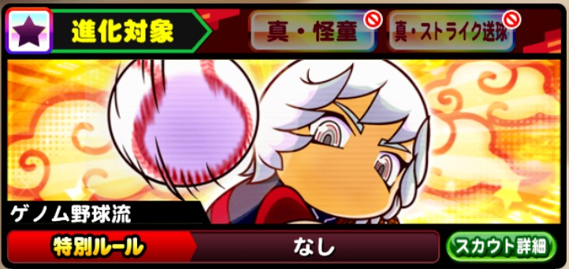
- 進化対象
- 真・怪童
真・ストライク送球 - 固有スカウト選手候補
- 瀧上 輝汐の契約書
尾上 亜月の契約書
明神 陽の契約書
竹内 脅人の契約書
夜神 極の契約書
ほかほか野球流

- 進化対象
- 真・ローリング打法
真・金縛り - 固有スカウト選手候補
- 東風平 晴来の契約書
休森 遊の契約書
白浜 浅海の契約書
帝王実業野球流

- 進化対象
- 真・強心臓
真・鉄仮面 - 固有スカウト選手候補
- 猫神 優の契約書
蛇島 桐人の契約書
峰本 遊児の契約書
［帝王実業］友沢 亮の契約書
猛田 慶次の契約書
山口 賢の契約書
石張 理の契約書
犬河 和音の契約書
楠糸 律の契約書
久遠 ヒカルの契約書
ときめき青春野球流

- 進化対象
- 真・怪物球威
真・電光石火 - 固有スカウト選手候補
- 三森 右京の契約書
三森 左京の契約書
小山 雅の契約書
神宮寺 光の契約書
茶来 元気の契約書
青葉 春人の契約書
スパルタ野球流

- 進化対象
- 真・アーチスト
真・鉄腕 - 固有スカウト選手候補
- 軍導 英雄の契約書
聖タチバナ野球流

- 進化対象
- 真・変幻自在
真・金縛り - 固有スカウト選手候補
- 六道 聖の契約書
橘 みずきの契約書
［ムーンライト］橘 みずきの契約書
［無念無想］六道 聖の契約書
ワールド野球流
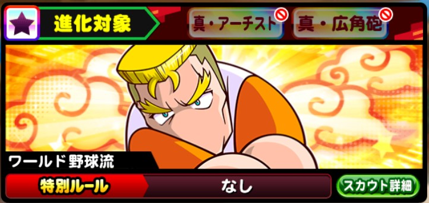
- 進化対象
- 真・アーチスト
真・広角砲 - 固有スカウト選手候補
- ミッキーの契約書
ギャネンドラの契約書
ヴィクターの契約書
マキシマムの契約書
ナヌークの契約書
アルヴィン＝ロックハートの契約書
ロディ・ブライトの契約書
アンヌの契約書
恋恋野球流
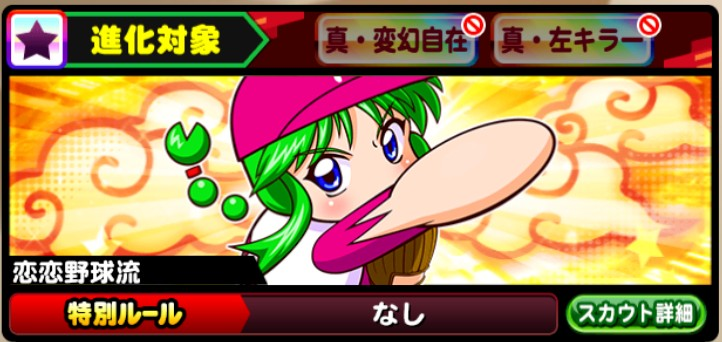
- 進化対象
- 真・変幻自在
真・左キラー - 固有スカウト選手候補
- 早川 あおいの契約書
高木 幸子の契約書
［サブマリン］早川 あおいの契約書
聖ジャスミン野球流
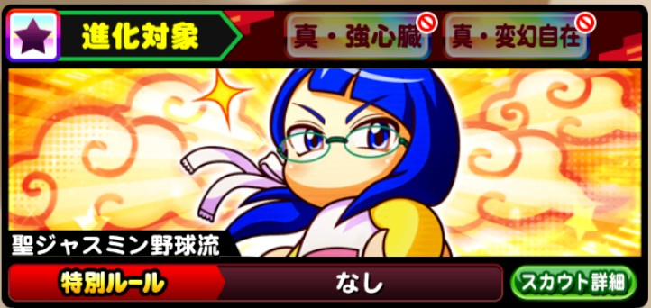
- 進化対象
- 真・強心臓
真・変幻自在 - 固有スカウト選手候補
- 川星 ほむらの契約書
美藤 千尋の契約書
大空 美代子の契約書
小鷹 美麗の契約書
太刀川 広巳の契約書
［ジャスミン］太刀川の契約書
［ジャスミン］美藤の契約書
超最強野球流

- 進化対象
- 真・安打製造機
真・怪物球威 - 固有スカウト選手候補
- 皇 帝の契約書
裏あかつき野球流

- 進化対象
- 真・アーチスト
真・怪物球威 - 固有スカウト選手候補
- アフロ猪狩の契約書
西球記の攻略（トップ）に戻る